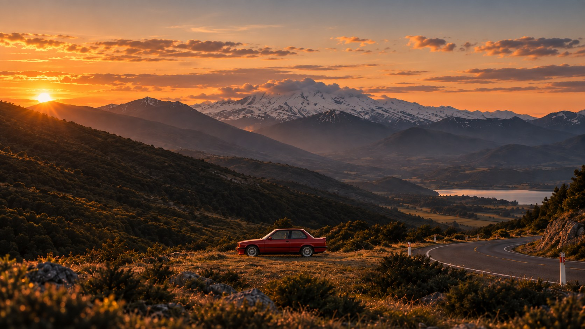
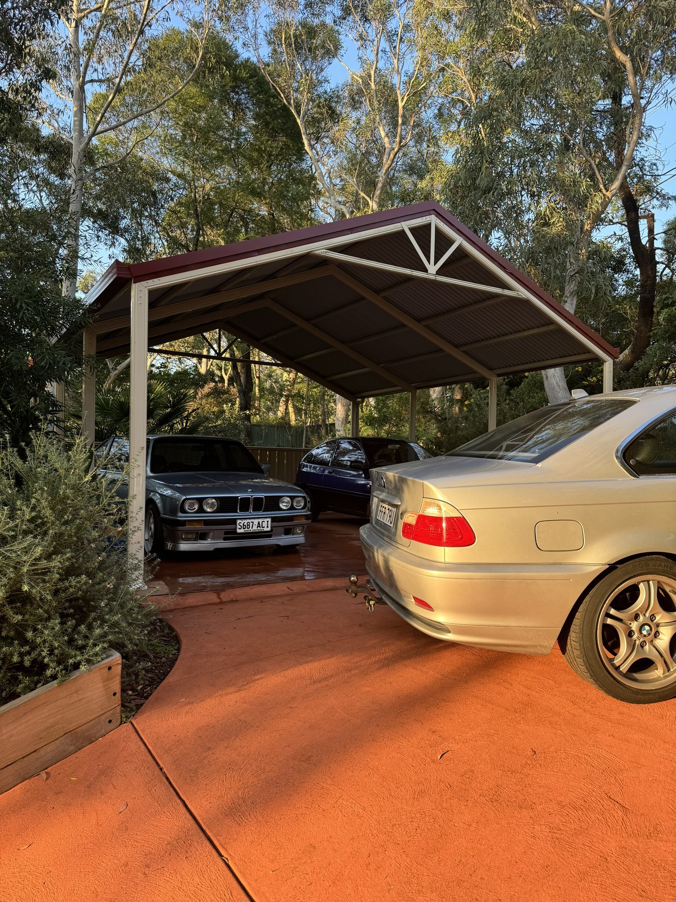

Product security assessments, security requirements and cyber assurance across complex Defence systems. Working with multidisciplinary engineering teams to bring security into the product lifecycle.
Product SecuritySystems EngineeringDefenceCyber

Product Security Engineer
+ Builder
I work across engineering, cyber, software and complex technical systems.
Outside work, I’m usually rebuilding an old BMW, working on the house, taking photos or starting something else I probably don’t have time for.
MORE ABOUT ME →
Product security assessments, security requirements and cyber assurance across complex Defence systems. Working with multidisciplinary engineering teams to bring security into the product lifecycle.
Cybersecurity planning, risk and assurance across national digital health programs, including Share by Default and My Health Record on FHIR.
A decade across electronics engineering, cyber incident-response training, capability development and sustainment, including the MQ-4C Triton and C-130J programs.
A clearer way to document, understand and modify automotive electrical systems.

Turning a 1980s Brisbane house into a better home, workshop and place to build things.

Returning the 318iS to the road properly — mechanical, interior and detail work.

A full restoration wrapped around an M54B30 conversion and the engineering to make it work.
From hail-damaged daily to a full DIY respray.
Restoration, wiring and the long process of making old machinery work properly again.
MORE NOTES
Building ChassisWireDesigning better automotive wiring documentation.→Engine swaps, wiring & old BMWsNotes from doing things the difficult way.→Have a project, idea,
or old BMW problem?